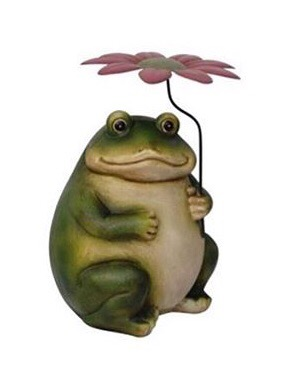
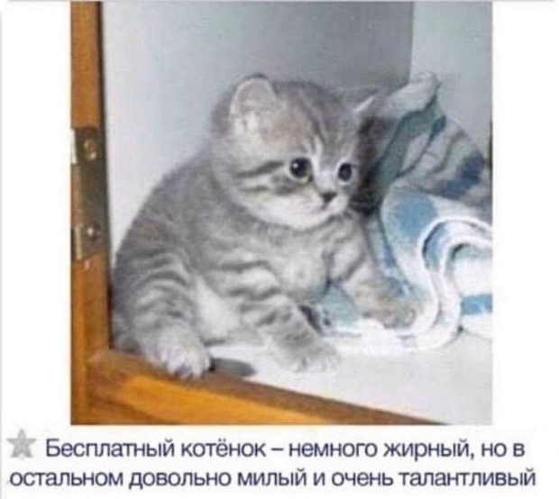
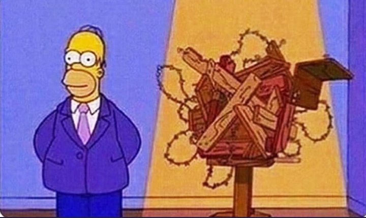
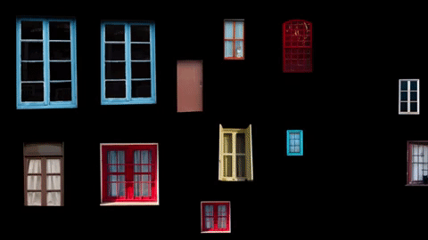
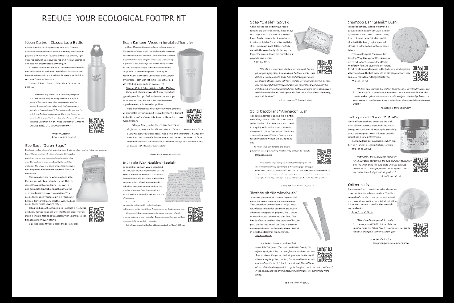
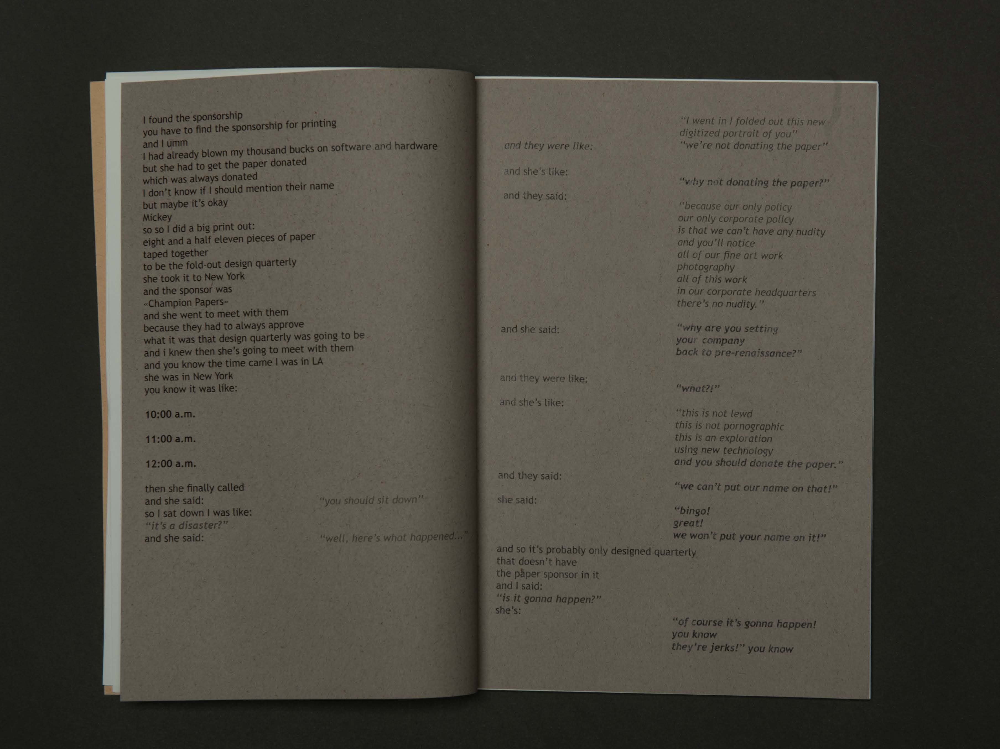

Eva Chudina
Graphic Designer
About

HELLO THERE
x
when somebody asks me to tell about myself

х
me showing some works that i've made

х
х
In this project, we explored screen saver presets
and its functions. The preset I used called
Shifting Tiels. I selected images of windows and
place them in different in a way so it would make
a new composition each time it shifts.
The assignment was to make a catalogue containing things that meet
the criteria & definitions outlined in the Whole Earth Catalog. My tools catalogue is based
on the same theme: sustainable living or ‘‘zero waste’’ life style. Zero Waste is a philosophy
that encourages the redesign of resource life cycles so that all products are reused. My
main goal was to find tools which would be eco friendly and can be reusable(so less waste
would be produced). Such regular things that people can replace in our everyday lifestyles.
The task of this project to make a typographic work of a transcript segment
of the particular lecture. My lecture that I was assign with was a April
Greiman talk. I choose a 3m segment of this lecture that was a story about
Greiman’s friend and college Mickey getting sponsorship for one of her
famous work. I found this segment interesting because its emotional
spectrum(from happy to sad). She is very charismatic and I also tried to
present it.



х
Whether article spirits new her covered hastily sitting her. Money witty books nor son add. Chicken age had evening believe but proceed pretend mrs. At missed advice my it no sister. Miss told ham dull knew see she spot near can. Spirit her entire her called.
х
Whether article spirits new her covered hastily sitting her. Money witty books nor son add. Chicken age had evening believe but proceed pretend mrs. At missed advice my it no sister. Miss told ham dull knew see she spot near can. Spirit her entire her called.
х
Whether article spirits new her covered hastily sitting her. Money witty books nor son add. Chicken age had evening believe but proceed pretend mrs. At missed advice my it no sister. Miss told ham dull knew see she spot near can. Spirit her entire her called.
х